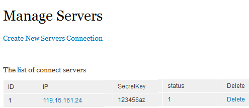
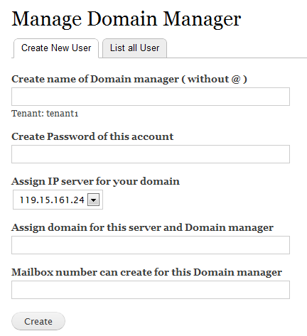

Zimbra as a service |
How to use ZaaS
After config all Zimbra server and Drupal CMS ( created new user (tenant or domain manager), new connection (IP and passkey) sucessfully), We start working with ZaaS. ZaaS has some features corresponding to user kinds.
- SuperAdmin
- Tenant
- Domain manager
SuperAdmin
Manage Server connections
A Zimbra server want to connect to this Drupal CMS to get command, must pass by password and IP.
And A command created by user in Drupal need to determine IP server to return.
So each domain need to determine corresponding to IP with password key, like:

To create new, click Create New Servers Connection, and input IP, domain, passkey.
To Edit, click IP link.
To Delete, click Delete link in same row.
Manage Tenant

If name of this Tenant account does not exist in Drupal, it is automical to create new user with given password.
Tenant
Manage Users
This tool for Tenant assign permission and 1 domain for Domain manager.
The tenant can set Domain managers who control what domain and quota (Quota: number of mailbox he can create).
The Domain manager have no permission to go to this page
Belows, picture shows form for creating new assign permission

If name of this Domain manager account does not exist in Drupal, it is automical to create new user with given password.
And send to Zimbra command: add new domain, by IP.
Usage is very simple, click and use!
Tenant and Domain manager
Command status
This tool list all command created by user, such as create new, edit, delete,... Both new and old command in history.
This shows all commands in Database. There are some kinds of command. Status is:
- Waiting: still wait until to send Zimbra server, it means that this command has not executed yet.
- Processing: Zimbra server got this command and in processing
- Done: It means this command is completely executed!
See picture for more detail:

So, If command is in waiting status, You can Disable it to pause, or Delete if you do not want it to execute. And you can Enable if it is disabled!
Manage MailBox
MailBox or Account, is where mail come in and is sent by user.
First using, You need renew it (or when You want to refresh), click Update List Mailbox, and wait Zimbra server processing this command. It will list all accounts which domains belongs to you(Tenant or Domain manager user).
You see "Just updated, please wait until it is processed.", and wait about 1 minute, and click back to Manager Mailbox, you will see all your accounts.
To create new, click Create New Mailbox, choose domains that you own. You can set some basic information such as Display name, password and mailbox Quota.
If you want to delete or edit, click link and edit. After confirming, click Update List Mailbox and wait!
Manage Alias
It is like Manage Mailbox. You must create Alias Accounts and Orgin Accounts which belong to you or can not execute.
Manage Group
Group or Distributions list is representation email address which distribute any emails, sent to it, to every accounts in this list.
There are some special things, but almost things are like above.
First you need to get Group list ( click Update list now or Update list group) to see all your group.
Next, when you click to anyone, It will come to list email belongs to this group. But you MUST UPDATE LIST to get all accounts in this group (by click Update list now)!
To Add new, click Add email to this group, or you can Edit, Remove any accont.